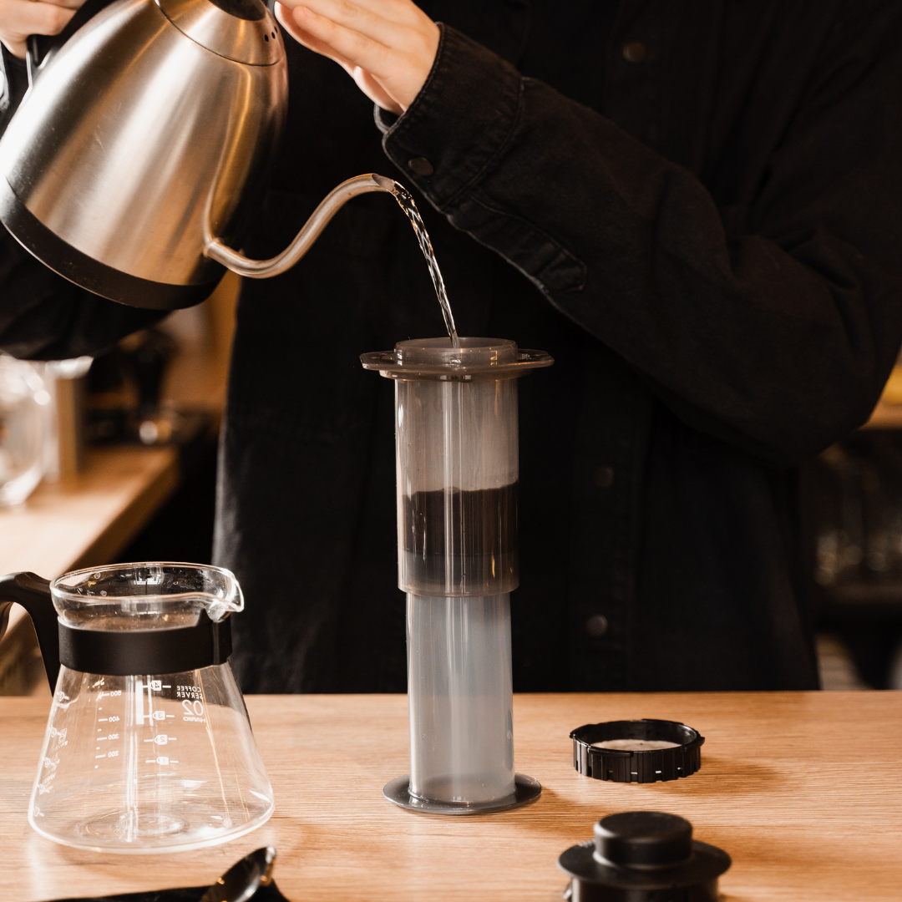
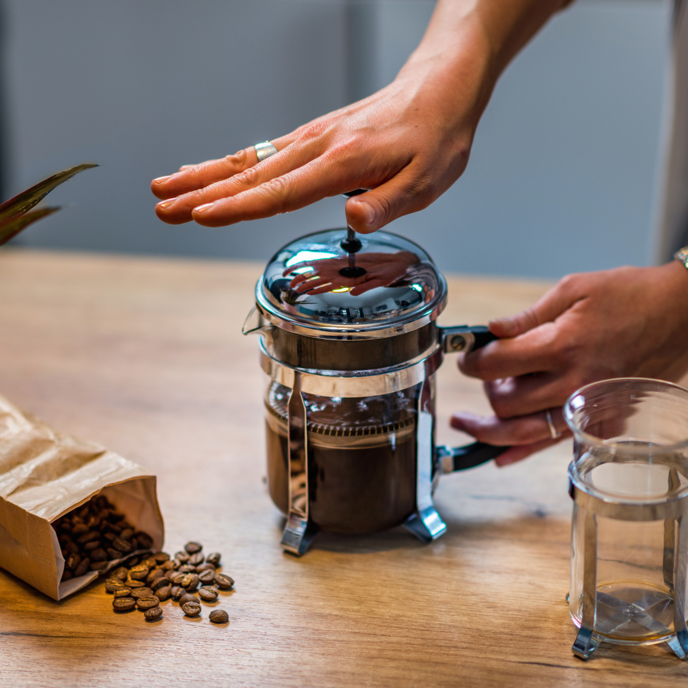

Step-by-Step Guide
How to Brew Coffee: Step by Step
Follow these step-by-step guides to brew the perfect cup of coffee using AeroPress, French Press, or Pour-over methods.
AeroPress
Learn how to brew coffee using the AeroPress. Watch the instructional video below to follow along with each step.
French Press
Learn how to brew coffee using the French Press. Follow the video guide below for a step-by-step process.
Pour-over

Learn how to brew coffee using the Pour-over method. Watch the video tutorial below to see each step.